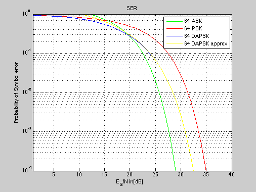

SER of DAPSK.
Copyright 2007 Telecommunications Lab
clear all; close all; ES_N_dB=[1:40]; ES_N_lin=10.^(0.1*ES_N_dB); N=64; k=3.5; d_min=sqrt(2)/7; a=2; p_e_ask=k*.5*erfc(sqrt(ES_N_lin.*(d_min^2/4))); p_e_psk=erfc(sqrt(ES_N_lin).*sin(pi/(64))); p_e_dapsk_approx=.5*erfc(sqrt(ES_N_lin)*a^(-1)*sin(pi/16))+.5*erfc(sqrt(ES_N_lin*a^(-2)*sin(pi/16)))+.5*erfc(sqrt(ES_N_lin)*.5*(a^(-2)-a^(-3)))+.25*erfc(sqrt(ES_N_lin)*.5*(a^(-1)-a^(-2))) p_e_dapsk = .5*erfc(sqrt(ES_N_lin)*a^(-1)*sin(pi/16))+.5*erfc(sqrt(ES_N_lin*a^(-2)*sin(pi/16)))+.5*erfc(sqrt(ES_N_lin)*.5*(a^(-2)-a^(-3))) + .25*erfc(sqrt(ES_N_lin)*.5*(a^(-1)-a^(-2))) - (.5*erfc(sqrt(ES_N_lin)*a^(-1)*sin(pi/16))+ .5*erfc(sqrt(ES_N_lin*a^(-2)*sin(pi/16)))) .* (.5*erfc(sqrt(ES_N_lin)*.5*(a^(-2)-a^(-3))) + .25*erfc(sqrt(ES_N_lin)*.5*(a^(-1)-a^(-2)))) semilogy(ES_N_dB,p_e_ask,'g',ES_N_dB,p_e_psk,'r',ES_N_dB,p_e_dapsk,'b',ES_N_dB,p_e_dapsk_approx,'y','LineWidth',1.5); legend('64 ASK','64 PSK','64 DAPSK', '64 DAPSK approx') title('SER') xlabel('E_S/N in[dB]') axis([1 40 0.0001 1]) ylabel('Probability of Symbol error') grid on;
